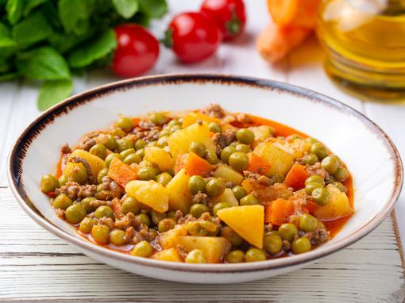

Simple Peas Soup

Preparation instructions
Hi all! This is our second recipe for single guys cooking on their own.
This one is a bit more hustle, but still easily done!
List of ingredients
- Green Peas 450 gr.
- Olive oil
- 2 medium carrots
- 1 medium onion
- 1 medium potato
- Seasonings: salt, pepper, red paprika
Steps
- Cut the onion into small parts
- Put the onions in a preheated oil in a pan
- Cut the carrots and also put on top of the onion
- When onion becomes glassy, put in the salt, pepper and red paprika seasonings
- Add cutup potato
- Add water 2 fingers thick above all the ingredients in the pan
- And leave it to cook...
- It is done when the hard vegetables are done (soft)
- In a cup, stir 1 spoon flour and some water and stir until smooth
- Add water and flour mix into the pan and cook for 2 more minutes
- Serve :)